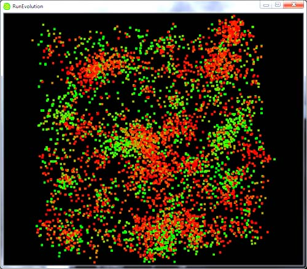

Author: Deepak Chandran
Introduction
The Network Evolution Library is a set of functions that allow the user to evolve biological networks. The library is written in C. The user provides a fitness function in C, and the library will do the rest.
There are several examples included, such as evolving chemotaxis, oscillators, noise-damping networks, and networks with multiple stable states.
Included with the library are stochastic simulation algorithms, deterministic simulation functions (using CVODE), and an optimization package (Nelder Mead algorithm).
How to get it
https://evolvenetworks.svn.sourceforge.net/svnroot/networkevolutio
Use Subversion to get the entire source code from the address above. You can either compile all the code yourself, or you can use CMake to do it automatically. See the README file for instructions.
